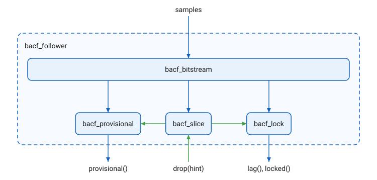

BACF Follower: Design
The public class is documented in the reference. This page is about how it is built.
The parts
bacf_follower holds four parts, each a class in cycfi::q::detail
under q/pitch/detail/, and calls them in a fixed order each sample.

-
bacf_bitstream, the front end: the comparator with hysteresis, the bit history, the edges, the pulses and the sample clock. Itsmismatch()is the score the other parts use: the bits that differ between two windows a lag apart. -
bacf_slice: the signal since the lastdrop(), with its start, its hint and its strongest pulse, and the window a score at a lag runs over. -
bacf_lock: the lag, acquired from like pulses, tracked edge by edge, tried at twice the lag on a miss, and dropped after two misses. -
bacf_provisional: a note’s first estimate of its lag, before any lock, with its check after a long lag. -
The lock and the provisional take pulses and edges as lists, newest first, and scores through a callable. Their tests run on scripted inputs, without audio.
Construction
bacf_follower(min_lag, max_lag, sps, hysteresis = -45_dB, window =
11.6_ms) sizes the parts, with ws the word size:
-
Lags in samples:
lround(min_lag * sps),lround(max_lag * sps). -
The window:
max(ws, lround(window * sps / ws) * ws)bits, whole words. -
bacf_bitstream: the hysteresis as a linear level, a history ofmax(window, one_lag(max_lag)) + max_lag + wsbits, and rings ofedge_capacity(256). That is the furthest a score reaches back: its window (the full one, or one lag of the slice, which at the longest lag is longer), the lag, and a word for the window’s alignment.one_lagis the slice’s,max(lag, min_window)rounded up to words. -
bacf_slice: the window, and amin_windowofuint32(0.002 * sps). -
bacf_lock: the lag range, the window, andlimit = uint32(threshold * window),threshold0.15. -
bacf_provisional: the lag range, andlong_hint = 0.013 * sps.
One sample
operator()(s) runs the front end on the sample with the edge callback
below, then, if an estimate is pending(), vets it; it returns the lock’s
lag() while the lock holds, and 0 while it does not. In
order:
-
The front end detects an edge. At a trailing edge the pulse it ends goes into its pulse list first.
-
The callback runs at the edge, before the edge enters its list and before the sample’s bit enters the history:
-
at a trailing edge, the newest pulse goes to
slice.observe(), for the slice’s peak; -
locked:
lock.track(edges of this kind, now, scorer); -
unlocked, with two pulses or more:
provisional.estimate(pulses, slice)if there is no estimate yet, thenlock.acquire(pulses, scorer).
-
-
The front end updates the pulse in progress, stores the bit and advances the clock.
-
If an estimate is pending,
provisional.vet(slice, now, periodicity), now with this sample’s bit in the history.
The other calls: drop(hint) is lock.drop(), slice.drop(now, hint)
and provisional.drop(); reset() resets all four parts. lag(),
locked() and periodicity() are the lock’s, provisional() is the
provisional’s value(), and window() is the window in bits.
Scores
The scorer the follower passes the lock, at the current now:
-
fits(lag):min_lag ⇐ lag ⇐ max_lag, andbits.has(lag, w)withw = slice.window(lag, now), andslice.ready(lag, now). -
operator()(lag):m = bits.mismatch(lag, w), the samew;mitself whenwis the full window, elselround(m * window / w). Scaled to the full window, onelimitapplies to both windows.
The periodicity the provisional’s vet is passed, for a lag: 1 -
bits.mismatch(lag, w) / w with w = slice.one_lag(lag), unscaled.
Invariants
-
The sample clock wraps; times are compared by their difference, never by their order.
-
A score never reaches before the last drop: every score the lock makes needs
fits(), and the vet needsslice.ready(), both of which hold only once the compared bits are all after it. -
lag()changes only at an edge. A drop, or the loss of the lock, leaves it at the last value held. -
Before any drop there is no slice: the full window and no estimate, at any clock value.
-
The history holds the furthest any score reaches back;
bacf_bitstream::mismatch()asserts it in debug builds. -
Nothing allocates after construction.
Verification
The refactor into these parts was checked bit for bit: lag(), locked(),
periodicity() and provisional() at every sample, and the
bacf_pitch_shifter output at -12, +5 and +12 semitones, on all 37 files of
the onset corpus, identical before and after. Each part has its own test
under test/pitch/detail/; the follower’s tests in
test/pitch/bacf_follower.cpp are the integration tests.